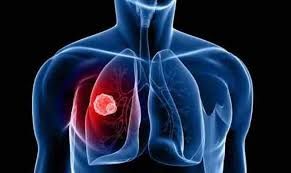

फेफड़ा

प्रत्येक प्राणी, जो वायु में श्वांस लेते हैं, उनके शरीर का सबसे महत्त्वपूर्ण अंग है, 'फेफड़ा' या 'फुप्फुस'। फेफड़े को वैज्ञानिक या चिकित्सीय भाषा में फुफ्फुस कहा जाता है। यह प्राणियों में एक जोडे़ के रूप मे उपस्थित होता है। फेफड़े की दीवार असंख्य गुहिकाओं की उपस्थिति के कारण स्पंजी होती है। फेफड़े में ही रक्त का शुद्धीकरण होता है। रक्त में प्राय: जीवनदायिनी ऑक्सीजन का मिश्रण होता है। फेफड़ों का मुख्य कार्य वातावरण से ऑक्सीजन लेकर उसे रक्त परिसंचरण मे प्रवाहित करना और रक्त से कार्बन डाइऑक्साइड को अवशोषित कर उसे वातावरण में छोड़ना है। गैसों का यह विनिमय असंख्य छोटी-छोटी पतली-दीवारों वाली वायु पुटिकाओं, जिन्हें 'अल्वियोली' कहा जाता है, में होता है। यह शुद्ध रक्त पल्मोनरी धमनी द्वारा हृदय में पहुँचता है, जहाँ से यह फिर से शरीर के विभिन्न अवयवों मे पहुँचाया किया जाता है।
फेफड़ों की संरचना
फेफड़ों की आन्तरिक संरचना मधुमक्खी के छत्ते के समान स्पंजी, असंख्य वायुकोषों में बँटी रहती है। वायुकोषों की संख्या वयस्क व्यक्ति में लगभग पन्द्रह करोड़ होती है। प्रत्येक वायुकोश का सम्बन्ध श्वसनी से होता है। प्रत्येक श्वसनी जो श्वासनली के दो भागों में विभक्त होने से बनती है, फेफड़े के अन्दर अनेकों शाखाओं तथा उपशाखाओं में विभक्त होती है। इसकी अन्तिम महीन उपशाखाएँ कूपिका नलिकाएँ कहलाती हैं। प्रत्येक कूपिका नलिका के सिरे पर अंगूर के गुच्छे की तरह अनेक वायुकोश जुड़े रहते हैं। प्रत्येक वायुकोश अति महीन झिल्ली का बना होता है। इसकी निर्माणकारी कोशिकाएँ चपटी होती हैं। इसकी बाह्य सतह पर रुधिर कोशिकाओं का जाल फैला रहता है। इस जाल का निर्माण पल्मोनरी धमनी के अत्यधिक शाखान्वयन से होता है। इससे कार्बन डाइऑक्साइड युक्त रक्त फेफड़ों में आता है। कार्बन डाइऑक्साइड में वायुकोश में विसरित हो जाती है तथा ऑक्सीजन रक्त में मिल जाती है।
श्वासोच्छ्वास या श्वास क्रिया
वायुमण्डल की शुद्ध (ऑक्सीजन युक्त) वायु फेफड़ों में पहुँचने तथा अशुद्ध वायु के फेफड़ों से बाहर निकलने की क्रिया को 'श्वासोच्छ्वास' क्रिया या साँस लेना कहते हैं। मनुष्य 12 से 15 बार प्रति मिनट की दर से बाहरी वायु को फेफड़ों में बार–बार भरता और निकालता है। यक एक यान्त्रिक क्रिया होती है। इसके दो चरण होते हैं-
- अन्तःश्वसन या निश्वसन या प्रश्वसन - इस प्रक्रम में फेफड़े फूलते हैं, जिनसे इनमें वायु का दबाव बाहरी वायु की दबाव की अपेक्षा कुछ कम हो जाता है और बाहरी वायु इनमें खिंच जाती है अर्थात् भर जाती है।
- निःश्वसन या उच्छ्वास या निःश्वसन अथवा उच्छ्वसन - इस प्रक्रम में फूले हुए फेफड़े पिचककर सामान्य स्थिति में आ जाते हैं, जिससे इनमें वायु का दबाव बाहरी वायु के दबाव से कुछ अधिक हो जाता है और इनमें भरी वायु बाहर निकल जाती है। इस प्रकार फेफड़े चूषक पम्पों या धौंकनी के समान कार्य करते हैं।
ऐच्छिक पेशियाँ
हमारी वक्ष गुहा एक बक्से या पिंजरे के समान होती है, जिसके पृष्ठतल पर कशेरुक दण्ड अधर तल की ओर स्टर्नम पार्श्वों में पसलियाँ तथा नीचे की ओर तन्तुपट या महाप्राचीर अथवा डायाफ्राम होता है। पसलियाँ पीछे की ओर कशेरुकाओं से तथा आगे की ओर स्टर्नम से जुड़ी होती हैं। प्रत्येक दो पसलियों के बीच दो प्रकार की ऐच्छिक पेशियाँ होती हैं-
- बाह्य अन्तरापर्शुक पेशियाँ - इन पेशियों का एक जोड़ा पसली के ऊपरी भाग से निकलकर अपने पीछे वाली पसली के निचले भाग से जुड़ा होता है।
- अन्तः अन्तरापर्शुक पेशियाँ - इन पेशियों का एक जोड़ा प्रत्येक पसली के निचले भाग से निकलकर अपने पीछे वाली पसली के ऊपरी भाग से जुड़ा रहता है।
निश्वसन या प्रश्वसन अथवा अन्तःश्वास
इस क्रिया में वायु फेफड़ों में प्रवेश करती है। मनुष्य का डायाफ्राम वक्षीय गुहा के तल पर स्थित अरीय पेशियों की एक पतली स्तर का बना होता है। इसके उपांत पीछे की ओर तथा पार्श्व में लंबर कशेरुकाओं से तथा आगे की ओर स्टर्नम से जुड़े होते हैं। डायाफ्राम विश्राम की स्थिति में गुम्बद के समान होता है। जब अरीय पेशियाँ सिकुड़ती हैं, तो डायाफ्राम गुम्बद के समान न रहकर अन्दर की ओर या नीचे की ओर हटता हुआ चपटा हो जाता है, जिसके फलस्वरूप वक्षीय गुहा का आयतन बढ़ जाता है। इसी समय बाह्य अन्तरापर्शुक पेशियाँ सिकुड़ती हैं, जिससे पसलियों पर बाहर तथा आगे की ओर खिंचाव पड़ता है और स्टर्नम भी ऊपर की ओर उठ जाता है। इसके फलस्वरूप वक्षीय गुहा का आयतन पहले की अपेक्षा बढ़ जाता है। वक्षीय गुहा का आयतन बढ़ने के साथ ही फेफड़ों का आयतन भी बढ़ने लगता है, जिससे वे फूल जाते हैं। फेफड़ों के फूलने से उनके अन्दर वायु का दबाव कम हो जाता हैं इस दाब को समान रखने के लिए वातावरण से वायु श्वसन पथ में होती हुई स्वतः फेफड़ों में प्रवेश कर जाती है। इस प्रकार वायु के अन्दर फेफड़ों में पहुँचने की प्रक्रिया को 'निश्वसन' कहते हैं।
निःश्वसन या उच्छ्वसन अथवा उच्छ्वास
इस क्रिया में वायु फेफड़ों से बाहर निकलती है। ये दोनों ही क्रियाएँ डायाफ्राम तथा पसलियों के बीच स्थित बाह्य एवं अन्तः अन्तरापर्शुक पेशियों के कारण होती हैं। डायाफ्राम के द्वारा होने वाली श्वसन क्रिया को 'उदरीय श्वासोच्छ्वास' तथा अन्तरापर्शुक पेशियों के द्वारा होने वाली श्वसन क्रिया को 'वक्षीय श्वासोच्छ्वास' कहते हैं। सामान्य स्थिति में तो निःश्वसन बिना किसी पेशी संकुचन के ही होता रहता है। केवल बाह्य अन्तरापर्शुक पेशियों तथा डायाफ्राम में शिथिलन से ही पसलियाँ एवं स्टर्नम तथा डायाफ्राम अपनी पूर्व स्थिति में (सामान्य स्थिति में) वापस आ जाते हैं। जिससे वक्षीय गुहा के आयतन पर दबाव पड़ता है। इससे फेफड़ों की वायु बाहर निकल जाती है। इस स्थिति में इसे 'निष्क्रिय निःश्वसन' कहते हैं। इसके विपरीत मनुष्य जब अधिक परिश्रम करता है, दौड़ता है या व्यायाम करता है, तो उस समय वह गहरी साँस लेता है, तो निःश्वसन की गति बढ़ जाती है। इस समय 'सक्रिय निःश्वसन' होता है। सक्रिय निःश्वसन में अन्तः अन्तरापर्शुक पेशियों के सिकुड़ने से पसलियाँ पीछे तथा स्टर्नम ऊपर की ओर खिसककर अपनी पूर्व स्थिति में आ जाते हैं। इस समय वक्षीय गुहा का आयतन कम होकर इतना ही रह जाता है, जितना कि निःश्वसन से पहले ही था। इसी समय डायाफ्राम की सिकुड़ी हुई पेशियों में भी शिथिलन होता है, जिससे वह अधिक चपटा न रहकर गुम्बद के आकार का हो जाता है। इस प्रकार, डायाफ्राम तथा पसलियों के सामूहिक प्रयत्न से वक्षीय गुहा का आयतन कम हो जाता है। इससे फेफड़ों पर दबाव पड़ता है और वायु श्वसन पथ में होती हुई बाहर निकल जाती है।